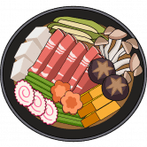 Sukiyakiswap Sukiyakiswap Finance (SUKI) 是具有通缩治理令牌模型的下一代自动做市 (AMM) 去中心化交易所。我们是您在币安智能链和 Pancakeswap 交易所上运行的首选收益农场，还有许多其他功能可以让您赚
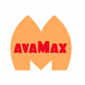 Summit Farm PolyMax 团队在 Avalanche 网络上的第一个农场。将是一个类似于他们在多边形上的版本的分层农业项目。这是团队的第 8 个农场。我们的计划旨在处理所有类型的农场和农村
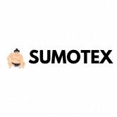 SUMOTEX 多年来，传统私募股权 (PE) 公司的运营方式一直停滞不前。由于每股认购上限为 50,000 美元，并收取高额的 2-20 美元（2% 管理费和 20% 利润分享）费用，因此进入门槛很
SUN Crypto SUN Crypto 是考虑到社区而构建的终极矩阵，所有付款都会立即转到钱包，每个人都会从矩阵中的每个位置获得 50%，今天的实时 Sun（新）价格为 0.005992 美元，24
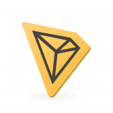 SUN Tron 孙创 |最佳投资合同 您每天可以获得 3.7% 到 6.7% :) 推荐奖励： 1级：5% 2 级：2 % 3级：0.5% 100% 合法且可验证格林纳达常驻世贸组织代表孙宇晨大使阁下|波
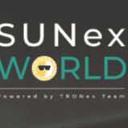 SUNEX World TRONex World 官方分支 - 区块链去中心化匿名平台 基于 SUN 智能合约的完全安全收益 验证和审计的智能合约代码Sunex, Inc | 408位LinkedIn 关注者。数码
Sunny Aggregator Sunny 是一个可组合的 DeFi 收益聚合器，由发展最快的区块链生态系统之一 Solana 提供支持。 Sunny Protocol 的设计以可组合性为核心功能，使其他应用程序和协议能够轻松地在其之
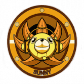 Sunny Finance Sunny 将通过观看广告、增加与合作伙伴在网站和移动应用程序上的互动等日常任务为用户带来收益。此外，Sunny Finance 直接连接到区块链节点，并显示有关您的
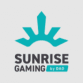 Sunrise Gaming DAO 的 SUNRISE GAMING 是世界上第一个使用 DAO（去中心化自治组织）的综合性游戏平台。DAO 的日出游戏。 @SunriseGaming_d。致力于使赌场游戏去
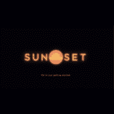 Sunset Finance 多边形网络上的分层单产农场。我们推出后的目标是成为 Polygon Network 上的顶级收益聚合器之一。我们的避难所将在农场启动后大约一两周开始！Sunset Finance 头脑风
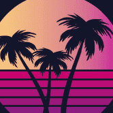 SunsetCryptoFinance Polygon 网络上的分层收益农场 10,000 的最大代币供应和每块 0.005 的排放率 最好的价格控制来看看我们吧！！！SunsetCryptoFinance 是一个去中心化的
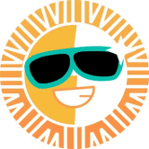 SunSwap SunSwap 是一种基于 TRON 的交易协议，用于 TRC20 代币之间的交易。根据系统价格，任何两个 TRC20 代币之间都可以轻松进行转换。收取的所有交易费用将直接流向协议的流动性
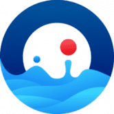 SunTronOcean Suntron Ocean 是一个用于加密知识和网络的去中心化智能合约平台，连接来自世界各地的人们，并提供无尽的发展机会。 通过 Tron 网络的智能合约，用户因扩大团队和增加
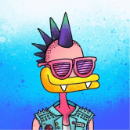 SupDucks 曾经想要 10,000 个朋友吗？好吧，您将要购买前往区块链上最病态俱乐部会所的单程票。 MegaVoltCorp 慷慨的霸主们煞费苦心地手绘了一些最糟糕的作品，我的意思是最糟糕的
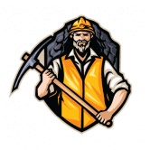 SUPER MINER SuperMiner 每天产生 5% 的 BNB 利润。最高 10% 推荐奖励和 3 倍复合奖金。完全验证和审计的智能合约。超级矿工：成长矿工是一款模拟手机游戏。 TapTap 提供超级矿工预注册：成
Superfast 第一款具有铬和马力的 NFT 收藏家纸牌游戏！ 我们的使命是将传统的汽车四重奏纸牌游戏演变成令人兴奋的基于多边形的 NFT 游戏。 SUPERFAST.CARDS 不仅仅是一个很好的收藏 NFT 集
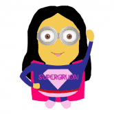 SuperGirlion Farm 功能/合同 SuperGirlion 代币（新）： 5% 转让税（94% AUTOBURN） ANTI WHALE，最大 2.5% 的供应转移可能！ 供应上限：~316K SGIRLn 每约 24 小时减少 10% 的排放量
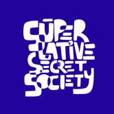 Superlative Secret Society SuperlativeSS 是具有真实世界效用的 11,111 个可收藏的#NFT。受主要人格特征的启发。 SuperlativeSS 由充满激情的团队和强大的草根社区打造。该项目提供了令人难以置信的实用性，
SuperLauncher SuperLauncher 是一个跨链启动板，可让投资者以安全、可信和去中心化的方式访问优质项目，并使项目能够以一流的功能筹集资金。 SuperLauncher 帮助项目在币安智能链上进行代币销
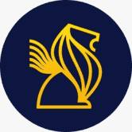 SuperLion.finance 🛡️安全第一！ SuperLion 是币安智能链上最可靠的下一代收益农场，具有独特的功能： 汽车减排 燃烧机制 推荐计划 从我们的合同中删除了迁移代码 审计 时间锁Supe
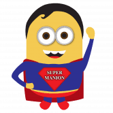 SuperManion SuperManion 是运行在币安智能链上的最好的自动流动性获取收益农场和 AMM 去中心化交易所，具有许多独特和创造性的功能，让您赚取和赢取更多。 超人代币： 5% 转让税（
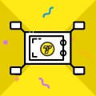 SuperNode Staking 质押者存入 TT 以获得高达 24% 的 APR 质押奖励。将您的 Evmo 委托给 Allnodes - 最值得信赖和可靠的非托管平台。只需 5% 的费用即可获得最高奖励。在验证 EVMOS 时扩大您的质押收
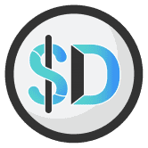 Supra Dollar Supra Team 的 Algostable 代币与 1 美元挂钩Supra 是#BSC、#FTM、#CELO 和#Polygon 的#Defi 的多链项目 使用我们的#SupraBridge
Supra Finance Supra Finance 是一个收益优化平台。专注于创新方法来最大化您在 DeFi 中的收益。我们根据正常和退化保险库的项目风险将我们的保险库分开。Supra 是#BSC、#
Supra VOODOO Supra Voodoo 是一个专注于复活死代币的单产农业平台。这个由 Supra Finance 团队制作的 degen 农场为 FROG 和 ZOMBIE 等死代币创造流动性，以赚取 VOODOO。您知道使用 $VOODOO 可以获得 $BNB $BTC
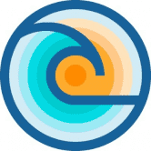 SURF Finance SURF.Finance 是一个创新的新 DeFi 项目，专注于可持续性、透明度和社区。它由 DeFi 本地人团队构建，具有以下特点： 治理代币 SURF，初始供应量为 0，最大供应量为 10,000,000 一
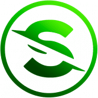 Survivor Sector Survivor Sector - 是一个 Play-to-Earn WaxBlokchain 项目，但游戏本身是塔防类型的代表。在游戏过程中，玩家将成为营地的指挥官，营地由 5 座主要建筑组成：锯木厂、花园、车间、住宅楼和
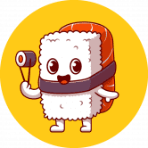 SushiFarm Finance 投资赚钱！将您的代币投入 SushiFarm 协议可以让您被动地获得 SUSHI。加强您的企业的财务战略并降低环境因素带来的风险。引导资本投资于支持可持续未来的投
sushiQ | BNB Mining Game sushiQ 是一个建立在 BSC 链上的 DAPP，它的玩家通过在我们的 DAPP 上玩一个简单的游戏，每天可以获得大约 7% 的 BNB 奖励。作为寿司大厨，您的主要目标是提供尽可能
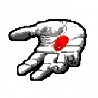 Sustainable Opportunity Matrix SOM 的构思和建立是为了响应具有真正透明性的代币的必要性。 一种对所有持有者都公平的代币，包括小鱼和鲸鱼。 一种代币，它为与区块链交互的任何人提供独
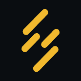 Suter Shield BSC Suter Shield BSC 是基于币安智能链的去中心化、二层交易和数据保护解决方案，同时也可以与以太坊、Heco 等其他智能合约平台集成。 它应用公钥同态加密来保护交
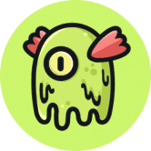 Swamp Finance 关于沼泽金融？ Swamp Finance 是一个收益优化器，它为 SWAMPY 代币的持有者和用户提供收益聚合。为了促进单产农业和复利过程的自动化，沼泽金融使用保险库。保险库还可